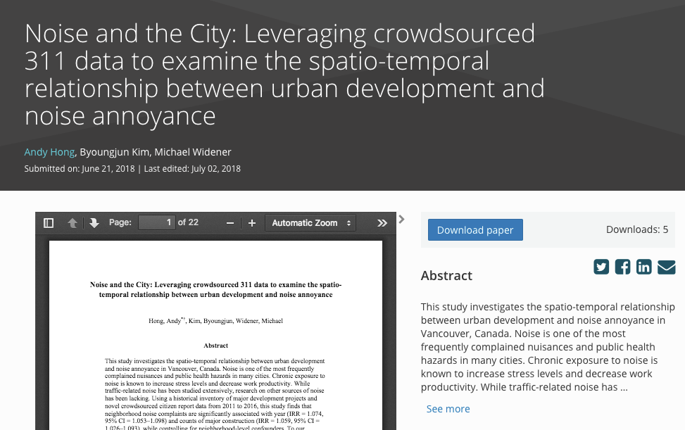

Smart Cities for Health
Using crowd-sourced “big data” to tackle noise pollution in a rapidly growing city
August 14, 2018
Andy Hong, PhD
Lead Urban Health Scientist
George Institute for Global Health
University of Oxford
A bit about me
- Lead Urban Health Scientist at the University of Oxford
- Co-founder of Healthy Cities Network
- Studied informatics, urban planning, and public health
- Bike commuter and hiker
- A father of two kids


Today's Agenda
- Smart cities and Internet of Things
- Open data, open government
- Application of open data: Noise 311
- Implications and way forward
1. Smart cities
Smart cities and Internet of Things

Real-time sensors = Big data

City Sensor

2. Open data movement
Open data, open government
- Open data movement
- Smart cities, smart government
- More than 200 US cities/counties have open data
- Big cities leading the open data movement
NYC open data

NYC open data
- More than 1,500 datasets
- A broad range of topics: e.g. budget, crime
- So much data generated every minutes
- Big cities = big data = big tasks
- From big data to smart cities
New school, new era

Vancouver open data

3. Application of Open data
Noise 311 study
Hong et al. 2018. Noise and the City Construction noise
Construction noise
Sources of urban noise
Vancouver 311 call center
- Garbage disposal
- Road maintanenance
- Graffiti removal
- Noise complaints
- ...
Major Constructions

Construction and noise

Heatmap of construction

Heatmap of noise complaints

Citizen complaints

Super users

Statistical approach
Noise during after hours

4. Implications and way forward
Smart cities and Internet of Things
Real-time sensors = Big data
City Sensor
Rise of spatial big data

Age of cloud computing
| Pre cloud days | Post cloud days |
|---|---|
|
|
Google Earth Engine Demo
Earth engine code editor: https://code.earthengine.google.com/Group session
InstructionGroup session
https://www.gapminder.org/tools- Group 1: Income x Life expectancy
- Group 2: Income x Life expectancy
- Group 3: Income x CO2
- Group 4: Income x CO2
- Group 5: Income x Babies per woman
- Group 6: Income x Babies per woman
- Group 7: Income x Child mortality
- Group 8: Income x Child mortality